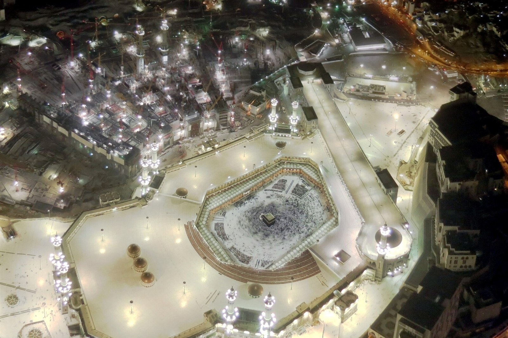

1. Ihram & Niyyah
Wear Ihram at the Miqat, make the intention for Umrah in your heart and begin the Talbiyah.
A simple, Sunnah-based guide for our pilgrims: the rituals in order, the gates of Masjid al-Haram, the Hateem, where to leave your luggage, help for children and elderly parents — everything that makes your Umrah easier.
The whole journey is four steps, in this exact order. Remember the order and everything else becomes easy.
Wear Ihram at the Miqat, make the intention for Umrah in your heart and begin the Talbiyah.
Seven circuits around the Kaaba, keeping it on your left, starting and finishing at the Black Stone.
Seven trips between Safa and Marwa — finishing at Marwa. Any dhikr or Qur'an is fine.
Men shave or trim the hair, women cut a fingertip's length. Umrah is complete.
Most mistakes happen before Tawaf even begins — so take a few minutes to get this part right.
لَبَّيْكَ اللَّهُمَّ لَبَّيْكَ، لَبَّيْكَ لَا شَرِيكَ لَكَ لَبَّيْكَ، إِنَّ الْحَمْدَ وَالنِّعْمَةَ لَكَ وَالْمُلْكَ لَا شَرِيكَ لَكَ
Labbayka Allahumma labbayk, labbayka la sharika laka labbayk, inna al-hamda wan-ni'mata laka wal-mulk, la sharika lak.
"Here I am, O Allah, here I am. Here I am — You have no partner, here I am. Indeed all praise, blessing and dominion belong to You. You have no partner."
If it happens by mistake or out of ignorance, stop as soon as you remember — there is no penalty for a mistake.
Take your time. Tawaf and Sa'i usually take one and a half to three hours at a normal pace — there is no need to rush.
Masjid al-Haram has more than 200 entrances. Every gate has its number displayed above the door, so the easiest way is to remember the numbers you need.
| Gate | No. | Best for |
|---|---|---|
| King Abdulaziz Gate Bab al-Malik Abdulaziz |
1 | Straight into the Mataf — the closest side to the Clock Tower / Ajyad area. Also a luggage collection point and a known spot for children's wristbands. |
| Ajyad Gate | 5 | Ajyad valley side. Escalators are a little further along (gates 7–8). Good when the Ajyad side is less crowded. |
| Bilal Gate | 6 | Southern flank of the mosque. |
| Bab as-Safa | 12 | The start of the Mas'a — use it when you begin Sa'i at Safa. |
| Bab al-Marwah | 23 | The end of the Mas'a — the closest gate to Marwa, where Sa'i finishes. |
| Bab al-Fath Gate of Victory |
45 | One of the five principal gates; handy for the Mataf and the Hateem side. |
| Bab al-Umrah | 62 / 63 | Direct access to the Mataf, and a luggage collection point. |
| King Fahd Gate | 79 | One of the five principal gates. Children's wristbands and a luggage collection point are reported here; left-luggage shops are on Ibrahim Khalil Road nearby. |
| King Abdullah Gate | 100 | Main entrance of the northern (King Abdullah) expansion — the newest and often quieter side. |
The five principal gates open straight into the Mataf: 1, 45, 62/63, 79 and 100. They have twin minarets, which makes them easy to recognise.
Use Bab as-Safa (12) to start Sa'i and Bab al-Marwah (23) to leave from Marwa after you finish.
There is no single Zamzam gate — chilled and room-temperature dispensers with cups are on every level and near the main gates.

The Hateem (also called Hijr Ismail or al-Hatim) is the low, semi-circular white marble wall on the north / north-west side of the Kaaba, standing a short distance from the Kaaba but not touching it. The space between that wall and the Kaaba was part of the Kaaba built by Prophet Ibrahim (peace be upon him), and the Prophet ﷺ told Aisha (may Allah be pleased with her) to pray inside it "because it is part of the House".
Coming by bus from Riyadh usually means carrying a bag. Here is how to handle it, and how to keep the little ones and the elders comfortable.
Small preparations that save a lot of difficulty on the day.